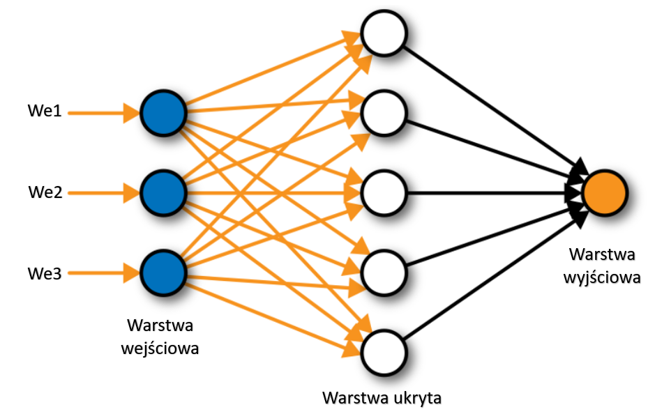
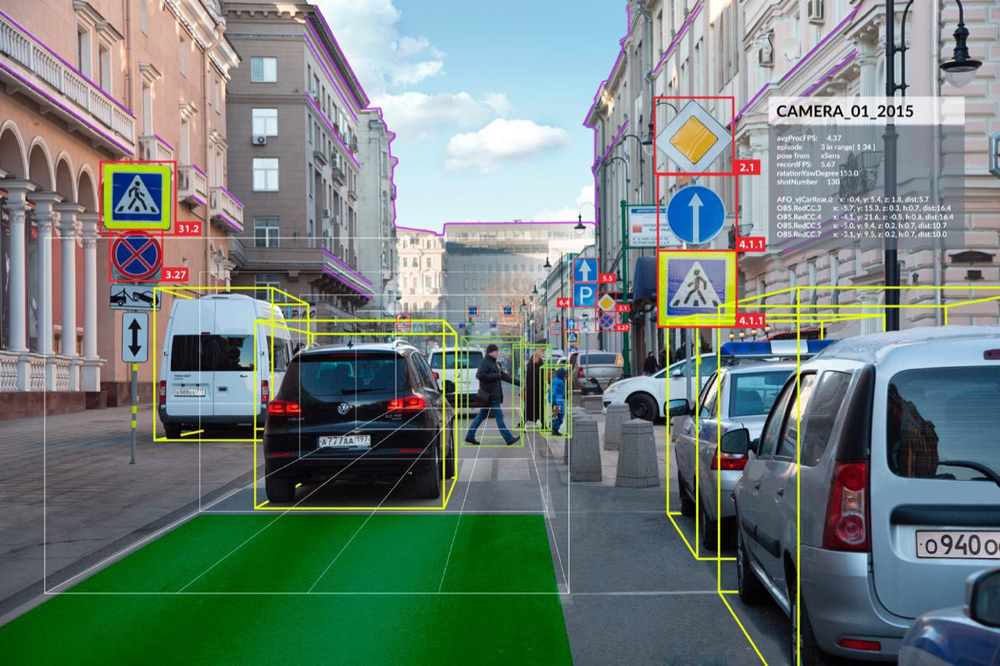
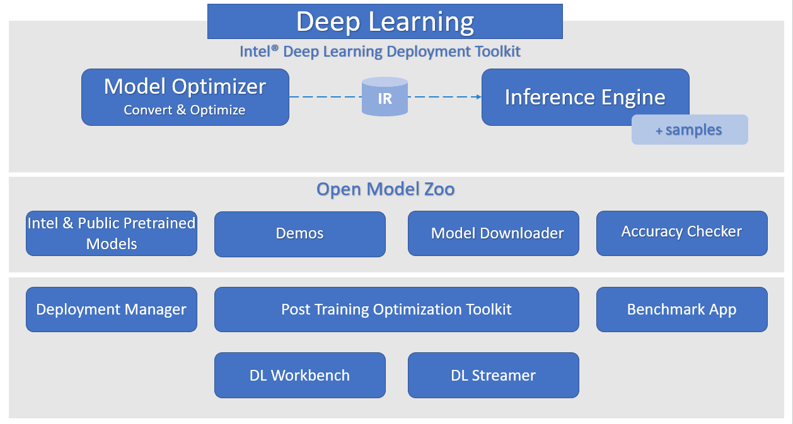
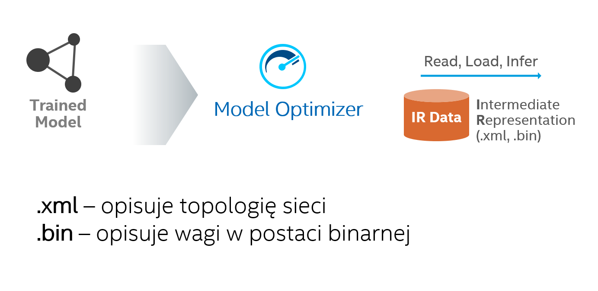

deep learning w praktyce
Szymon Durawa
Tomasz Dołbniak
Gdańsk 2021
Wstęp do AI
Czym jest sztuczna inteligencja?
1950 - Alan Touring
1956 - John McCarthy
- AI (Artificial Intelligence) - sztuczna inteligencja
- ML (Machine Learning) - uczenie maszynowe
- DL (Deep Learning) - uczenie głębokie
Ewolucja AI
Elementy sieci neuronowej
- Wejście
- Waga
- Blok sumujący
- Funkcja aktywacji
- Wyjście

Budowa sieci neuronowej

Rodzaje sieci

konwolucyjne
rekurencyjne
 GAN
GAN
Jakie problemy rozwiązuje sieć neuronowa?
- Klasyfikacja
- Przewidywanie
- Detekcja obiektów
- Segmentacja
- Zamiana tesktu na mowę
Zastosowanie sieci neuronowych
- Autonomiczne pojazdy
- Rozpoznawanie obrazów
- Przewisywanie trendów w sprzedaży/na rynkach giełdowych
- Silniki szukania
- Obrazowanie kliniczne
Uczenie sieci neuronowej
- Funkcja straty
- Propagacja wsteczna
- Wymaga dużej mocy oblicznieowej
- Wymaga dużej ilości danych wejściowych
- Wpływa na zmianę klimatu
Inferencja
Matematyka w DL
 pochodne cząstkowe
pochodne cząstkowe
teoria grafów
 algebra liniowa
algebra liniowa
 splot
splot
Grafy
w deep learningu
Sieci neuronowe

Model jako funkcja
 ->
->
PIES
->
->
PIES
$$y = f(x)$$
1 => PIES
0 => NIE PIES
Funkcja jako graf
$$f(x) = ax + b$$
Netron

lutzroeder/netron
Grafy w DL
- Skierowane
- Acykliczne
- Sortowalne topologicznie
- Krawędzie -> dane (tensory)
- Wierzchołki -> operacje
- Grafy obliczeniowe
Inferencja (obliczenie) grafu

- posortowanie topologiczne grafu
- implementacja operatorów
- sekwencyjne wykonanie operacji
clamp.cpp
Optymalizacje grafu
- Niezależne od sprzętu
- Analogiczne do optymalizacji w kompilatorach
- Wyszukują wzorców (patterns) do podmiany w grafie
- Zamieniają na efektywniejsze rozwiązanie
- Wielokrotnie "przechodzą" przez graf
nGraph

Kompilator grafów obliczeniowych
Implicit broadcast
Constant folding
NOP elimination
OpenVINO
Dlaczego OpenVINO
Open Visual Inference & Neural network Optimization
Intel OpenVINO toolkit
Schemat działania
Praca z OpenVINO
Praca z OpenVINO

Wspierane biblioteki
Model Zoo
Praca z OpenVINO

Model Optimizer
Post-Training Optimization Tool
Deep Learning Workbench
Praca z OpenVINO

Inferencja
OpenVINO na rynku
Inference Engine
- "runtime API"
- Warstwa abstrakcji nad pluginami
- Niezależne od frameworka, w którym zbudowano model
- Pracuje na zestawie .xml + .bin
- ...ale nie tylko - format ONNX